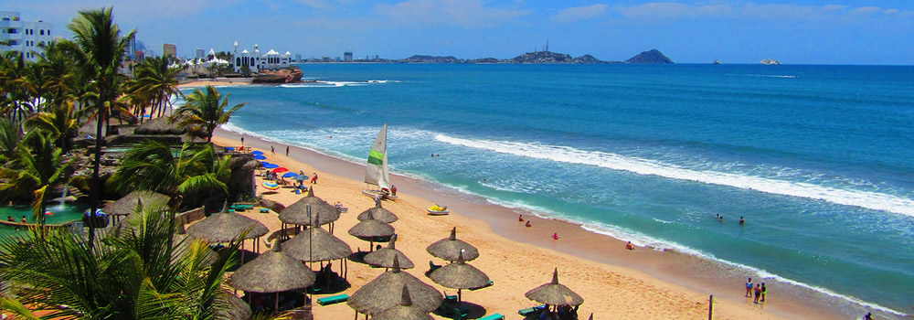

Mazatlán (en náhuatl: Masatlan ‘Lugar de venados’) es una ciudad del noroeste de México y cabecera del municipio del mismo nombre. Fundada en 1531, está situada en el estado de Sinaloa. El puerto de Mazatlán es un destino turístico de playas de México. Se ubica a 21 kilómetros al sur del trópico de Cáncer y colinda al norte con el municipio de San Ignacio y al poniente con el litoral del océano Pacífico. Es también conocida como "La perla del Pacífico".3
La ciudad se ha ido extendiendo con nuevas colonias, infraestructura, complejos turísticos y muchos kilómetros de playa localizada a lo largo de la zona costera que recorre 17 kilómetros. De acuerdo con el IV Conteo de Población y Vivienda 2020, Mazatlán tenía una población de 501,441 habitantes por lo que se mantiene como la segunda ciudad más poblada de Sinaloa luego de Culiacán.
Mazatlán, etimológicamente, proviene de la lengua náhuatl y significa «Tierra junto a los venados» (mazatl: «venado», tlān: «tierra» o «lugar» junto a). Originariamente, el nombre Presidio de Mazatlán era poseído por la población que actualmente se denomina Villa Unión. El puerto de Mazatlán servía como referencia para llegar por el mar a Presidio, y se llamaba Islas de Mazatlán. Mediante decreto del Estado de Occidente, del 11 de septiembre de 1828, Presidio de Mazatlán fue denominada Villa de la Unión. Este hecho dejó vacante este nombre, Mazatlán (tierra de venados), y toda vez que el puerto era conocido como Islas de Mazatlán adoptó dicho nombre.
Se ubica a 21 kilómetros al sur del trópico de Cáncer y colinda al norte con el municipio de San Ignacio y al poniente con el litoral del océano Pacífico. Es también conocida como "La perla del Pacífico".3